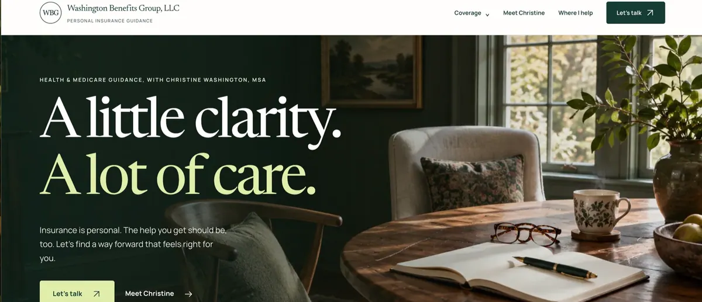

Washington Benefits Group, LLCStrategy + website
2026 / live
2026 / live

A personal insurance advisor needed a website that made complicated health and Medicare decisions feel calmer, clearer, and easier to navigate.
View the case study ↗